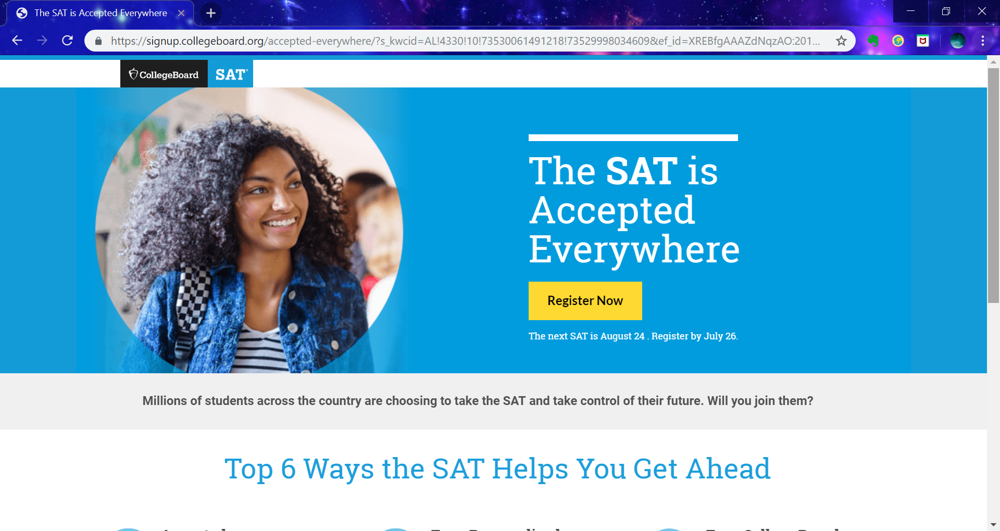
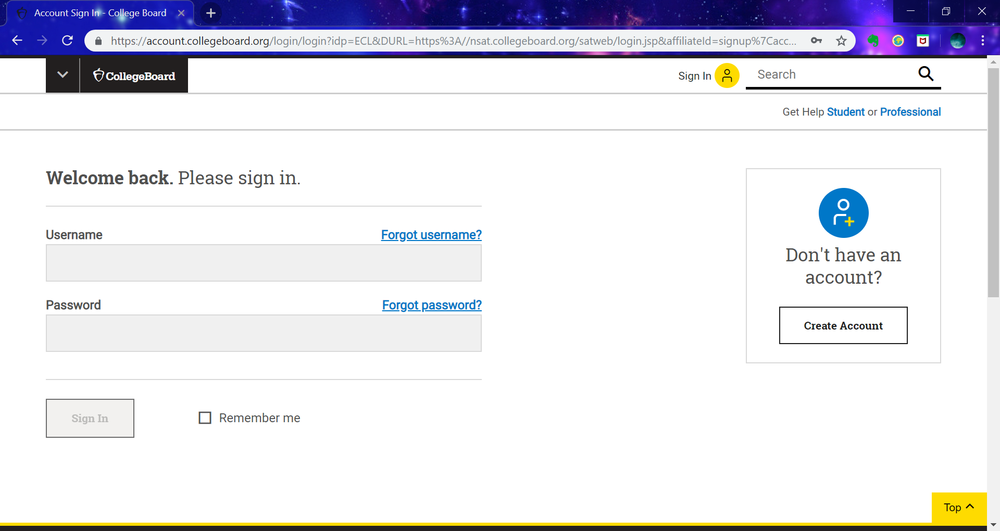
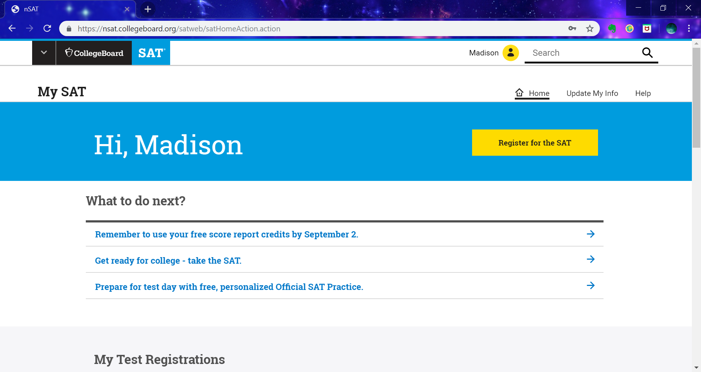
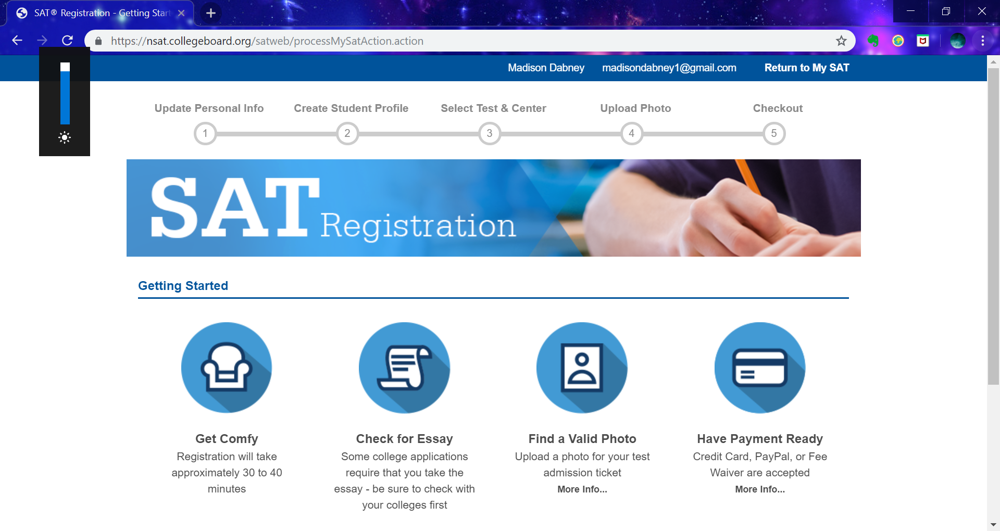

What is it?
The SAT is one of two important standardized college admission tests in the United States, the other being the ACT. The SAT is run by the College Board along with the PSAT and the AP program, or advanced placement program. The SAT is an aptitude test, meaning it shows your preparedness for college by measuring key skills such as reading comprehension, computational ability, and clarity of expression. The SAT has 4 sections each varying in length, these sections are evidence-based reading, writing, math, which is split into two sections, and the optional essay with. The SAT has a maximum score of 1600 without the essay. If a student takes the SAT with the essay the essay score is not factored into the main test score. Many states require some, if not all, juniors to take the SAT, including South Carolina, Rhode Island, Ohio, and others. The SAT is extremely important because most colleges and universities require students to send in their SAT or ACT scores as part of their college application.
How to Register
In order to register for the SAT, students need to log into or create a College Board account. For more information on creating a College Board account click here or visit the College Board section in our menu.
Step 1
Step 2
Step 3
Step 4
Below are the steps to registering for the SAT:
- Go to the College Board website's SAT registration page
- Click the “Register Now” button
- Sign into or create a College Board account
- Once logged in, fill out the "SAT Registration" form and follow the directions throughout
Dates and Deadlines
SAT testing occurs in the months of August, October, November, December, March, May, and June, but the exact dates vary from year to year. If your child plans on taking this test, it is important to keep up with these dates and be aware how many oppurtunities your child has to take the test, as well as when and where the test will be held.
The upcoming SAT Test Dates deadlines are:
| 2019 | 2020 | 2021 |
|---|---|---|
| 24th of August | 14th of March* | 13th of March* |
| 5th of October* | 2nd of May* | 8th of May* |
| 2nd of November | 6th of June | 5th of June |
| 7th of December* | 29th of August* | |
| 3rd of October* | ||
| 7th of November | ||
| 5th of December* |
*These dates include international testing locations. **All registration deadlines are 1 month before their respective testing date. All LATE registration deadlines are 13 days before their respective testing date if registering online or by phone. If mailing in your late registration, the deadline is 1 week before the standard.**